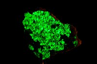

|
Astato |

Utilizações:
-Em pesquisas científicas.Atualmente, o isótopo astato-211 tem sido pesquisado para sua aplicação na medicina nuclear(potencial substituto para o isótopo de iodo)
O astato é feito artificialmente.
 -Radioativo
-Radioativo